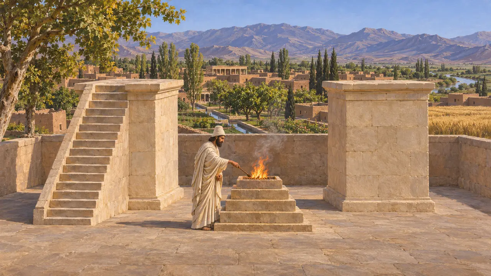
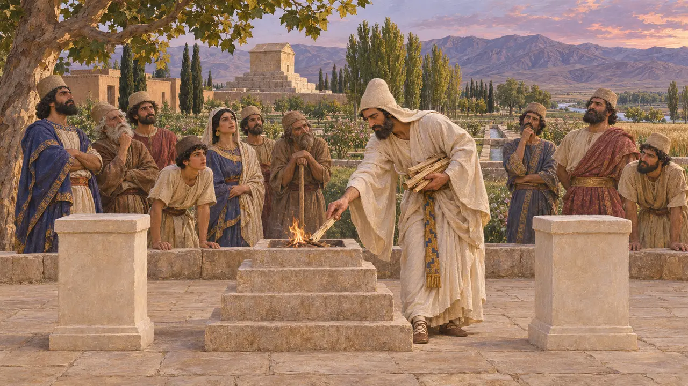
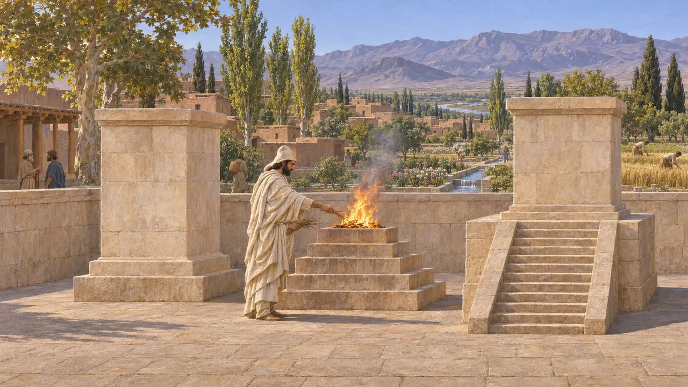

Altare dei Magi
Un altare all'aperto per i Persiani nella città di un altro popolo
Nel gioco: Livello 1: La tomba del fondatore
Dove il tempio principale della città è di altri, i Persiani hanno comunque bisogno di un fuoco e di un mago. Due basamenti e un altare a gradini all'aperto, secondo Pasargade e i rilievi delle tombe, sono quanto le prove consentono.
Nel gioco: Si costruisce dove il tempio di un altro popolo è il principale (Menfi, Susa, Sardi, Platea). Il suo mago va nei quartieri persiani, e qui si possono tenere i riti persiani.

I basamenti di Pasargade
Nelle fontiDue basamenti di calcare sorgono nel recinto sacro di Pasargade, uno con una scala. Che cosa vi stesse sopra si deduce da rilievi più tardi: il re, un fuoco o entrambi.
Stronach 1978

L'altare della tomba
Nelle fontiSopra la tomba di Dario il Re sta su una base a gradini davanti a un altare acceso, con una figura alata in alto. È il modello della forma di questo altare.
Naqsh-e Rostam, tomb of Darius; Garrison 2017

Perché nessun tempio
ContesoNessun tempio del fuoco achemenide è sicuro. Perciò l'Altare non ha né tetto né porta.
Iranica, "Fire altars"; Herodotus 1.131
Fonti
- Stronach 1978
- Garrison 2017